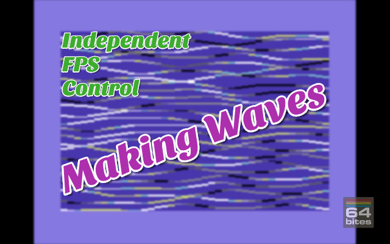
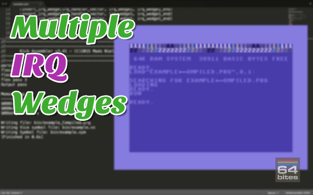

The easiest way to start programming Commodore 64
Learn BASIC and 6502 Assembly with bite-sized video tutorials.
Binge-watch previous episodes today!
Season 5 - IRQ, Zero Page, Stack, Jump Tables and ROM

Here's what you will get
- 9 videos (50+ minutes in total)
- transcripts (13000+ words)
- source code examples (10000+ LOC)
- access to 64bitesVIP Facebook group, where you can get help
- plenty of exercises to solve on your own
- online streaming
- download with no DRM
- one time payment (no monthly/annual fees)
You WILL learn how to:
- Animate characters.
- Use Interrupt Handling routine to drive the animation.
- Manage multiple IRQ wedges.
- Control animation speed in IRQ routines.
- How to use the Stack built into the 6502/6510 processors.
- Use
rts,rtiandbitinstructions as jumps. - Create efficient Jump Table pattern.
- What makes the Zero Page so important.
- Disable BASIC and KERNAL ROMs to get more space for your programs.
- Modify BASIC and KERNAL code.
See what others are saying!
I learned assembly the hard way, with only limited documentation. Although part of the fun is in discovering all these things yourself, I think such screencasts could have helped me in getting up to speed faster. They do contain some nice bits of information :)

- Paul Koller
Game Developer, Creator of C64anabalt, Super Bread Box and Micro Hexagon
64bites brings me closer to understanding a computer I learned to love long ago, and still do. More than anything, it is really fun to follow the lessons and I always look forward to the next episode with great anticipation. It is the best thing since chocolate.

- Sebastian Kostka
Online Marketing Wizard at MeMyselfAndUs
I enjoyed both narration and realisation.
Actually, I was really shocked to have so much fun watching a programming screencast!

- Robert Lapinski
CEO of Idea Head, Mastermind behind the Pixel Magazine
How much time did you spend playing games on your Commodore c64? 64bites is more than 8-bit childhood memories, its a way to keep your beloved C64 alive, let's make our own game with it.

- Andrzej Śliwa
Polyglot Programmer, Lead Developer at bonusbox GmbH
This is really cool. I don't know exactly how popular it will end up being, but there is always room online for things like this.

- Peter Cooper
Founder at Cooper Press, Chair of O'Reilly Fluent Conference
Having watched a few episodes, I reiterate my original position: sooooooo coool. And Michal have really done a top-notch job on writing, production, audio, everything.

- Avdi Grimm
Creator of the best selling programming screencast series - RubyTapas
All Episodes in this Season
Episode #045 - Managing ROM & RAM I
As we already know, Commodore 64 has exactly 64 Kilobytes of RAM. But we can't use all of it by default. BASIC Interpreter ROM, KERNAL ROM and I/O registers cover 20KB of RAM. Today we will learn how to disable BASIC & KERNAL, move their routines to RAM and modify them.
Episode #044 - Zero Page
In most computers based on 6502 and 6510 processors the first 256 bytes of memory are precious. Most instructions using this part of memory are shorter and faster to execute. Commodore 64 uses almost 99% of it default. In this episode we will learn how to use Zero Page addressing modes in our programs.
Episode #043 - Unusual Jumps
We already known that RTS and RTI can be used as jump instructions. But using branching as unconditional jumps and the BIT instruction to skip few bytes? That's just insane... But frequently used by KERNAL programmers:)
Episode #042 - Stack II - jumps
The 6502 stack is not only useful as a temporary storage for data in assembly programs. It is also used internally by the processor in three jump instructions: jsr, rts and rti. Knowing this allows us to use rts and rti instructions not only to return but also as jump instructions.
Episode #041 - Stack
The processor that powers the Commodore 64 supports only a handful of registers that can be used for arithmetic or logical operations. This means that we will often encounter a situation when we need to save temporary values in the memory, calculate some other thing, and then get back to previous ones. We can use store and load operations for that purpose. But it requires allocating memory for temporary variables. Fortunately, there is a better way... 
Episode #040 - Independent FPS Control
We already know how to insert our routine into the interrupt handler to get reliable 50 ar 60 frames per second for our animations. But what if we want to display them at only half that speed? In this episode we will learn a simple technique we can precisely control the frequency of any interrupt driven animation. 
Episode #039 - Multiple IRQ Wedges
In a previous episode, we've learned how to insert a routine at the beginning of the IRQ handler. In the most typical situation, we just need to store our routine address in the place in RAM called IRQ vector and jump to the default KERNAL IRQ handler. This will work in the majority of situations. But in some cases, another routine can already be wedged into the default handler. This may happen if your program is not the first one to run, or more commonly if a cartridge is inserted. Today we will learn to add and remove multiple IRQ wedges.
Episode #038 - IRQ Driven Animations
In our previous episodes, we've been using a quite primitive animation technique. We've been simply advancing frames in an infinite loop with and wasting enough time with a delay macro to slow the animation down.Not only we don't have an easy way to control the exact speed of animations using this technique. But the amount of delay needs to be updated whenever we add or remove any code to run in this loop.
Fortunately there is a different way. And I'd like to use this opportunity to introduce one of the most exciting features of the 6510 processor that powers the Commodore 64 - the interrupt handling.

Episode #037 - Animating Characters
We've already been talking a lot about hardware sprites. They are a useful tool to draw and animate dynamic parts of your game, application or a demo.The other way of creating graphics on this computer is to use characters. Apart from letters, the default font of Commodore 64 contains a set of graphical characters.
Today we will explore a way in which we can animate them.